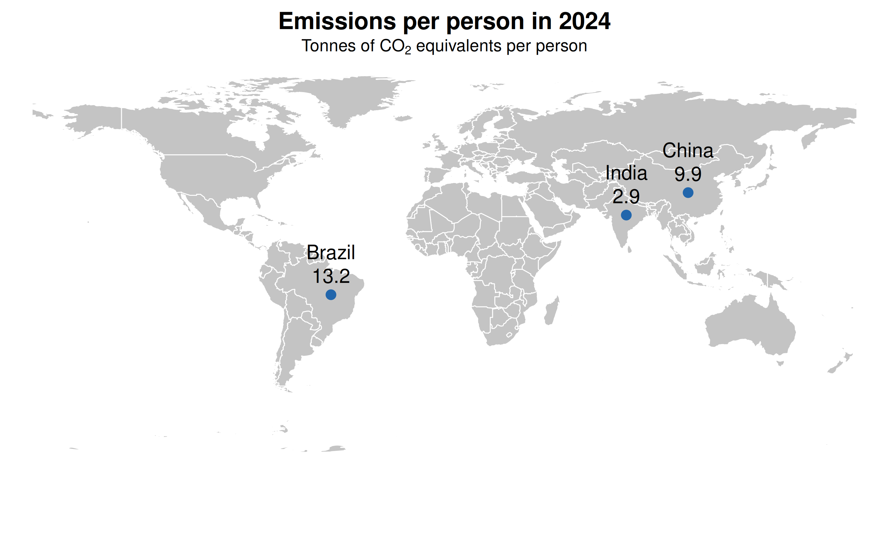

2 October 2026
This map compares greenhouse gas emissions per person in Brazil, China and India in 2024. Blue points show the three country locations, with a value next to each point.
Figure 1

Emissions data from Jones et al. (2025) and Our World in Data (2025); map from Becker et al. (2025); point coordinates from Natural Earth (n.d.).
Brazil, in South America, has the highest rate among the three countries at 13.2 tonnes of CO₂ equivalents per person. China and India, in Asia, have rates of 9.9 and 2.9.
I selected the emission data of Brazil, China and India in 2024 and added their national coordinate labels. In the R language, I drew a world map, marked with three blue dots, and marked the emission value of each country.
Emissions per person in 2024
Three labelled points compare emissions per person in Brazil, China and India in 2024. Brazil has the highest value at 13.2, followed by China at 9.9 and India at 2.9 tonnes of CO₂ equivalents per person.
Becker, R. A., Wilks, A. R., Brownrigg, R., Minka, T. P., & Deckmyn, A. (2025). maps: Draw geographical maps (Version 3.4.3) [Computer software]. Comprehensive R Archive Network. https://CRAN.R-project.org/package=maps
Jones, M. W., Peters, G. P., Gasser, T., Andrew, R. M., Schwingshackl, C., Gütschow, J., Houghton, R. A., Friedlingstein, P., Pongratz, J., & Le Quéré, C. (2025). National contributions to climate change due to historical emissions of carbon dioxide, methane and nitrous oxide (Version 2025.1) [Data set]. Zenodo. https://doi.org/10.5281/zenodo.16640595
Natural Earth. (n.d.). Admin 0 – countries (1:110 million scale) [Data set]. From https://www.naturalearthdata.com/downloads/110m-cultural-vectors/110m-admin-0-countries/
Our World in Data. (n.d.). Per capita greenhouse gas emissions [Interactive data visualization]. From https://ourworldindata.org/grapher/per-capita-ghg-emissions
Our World in Data. (2025). Per capita greenhouse gas emissions including land use [Data set]. From https://ourworldindata.org/grapher/per-capita-ghg-emissions
Longitude and latitude are expressed in the decimal system. The basic map uses the map package point coordinates based on the national label location of Natural Earth.
All blue dots have the same size and color.
The label shows the per capita emissions, calculated according to the 100-year warming scenario, rounded to one decimal place, and the unit is carbon dioxide equivalent tons. The year is fixed as 2024.
I included Brazil, China and India in 2024 and added label coordinates. These three records are complete and unique, so no values are filled in. Other countries are not included in this comparison.
Emissions include land use factors, which are estimates and uncertain.
4191929@student.rmit.edu.au
I used ChatGPT (OpenAI, 2026) to search for information and websites related to data visualisation. I also used ChatGPT (OpenAI, 2026) to identify vulnerabilities in my R code and revise it accordingly.
Becker, R. A., Wilks, A. R., Brownrigg, R., Minka, T. P., & Deckmyn, A. (2025). maps: Draw geographical maps (Version 3.4.3) [Computer software]. Comprehensive R Archive Network. https://CRAN.R-project.org/package=maps
Jones, M. W., Peters, G. P., Gasser, T., Andrew, R. M., Schwingshackl, C., Gütschow, J., Houghton, R. A., Friedlingstein, P., Pongratz, J., & Le Quéré, C. (2025). National contributions to climate change due to historical emissions of carbon dioxide, methane and nitrous oxide (Version 2025.1) [Data set]. Zenodo. https://doi.org/10.5281/zenodo.16640595
Natural Earth. (n.d.). Admin 0 – countries (1:110 million scale) [Data set]. From https://www.naturalearthdata.com/downloads/110m-cultural-vectors/110m-admin-0-countries/
Our World in Data. (n.d.). Per capita greenhouse gas emissions [Interactive data visualization]. From https://ourworldindata.org/grapher/per-capita-ghg-emissions
Our World in Data. (2025). Per capita greenhouse gas emissions including land use [Data set]. From https://ourworldindata.org/grapher/per-capita-ghg-emissions
OpenAI (2026) ChatGPT [Large language model], accessed 1 October 2026. https://chatgpt.com/share/6abed80e-7edc-83ec-b871-98e5e4b42dde